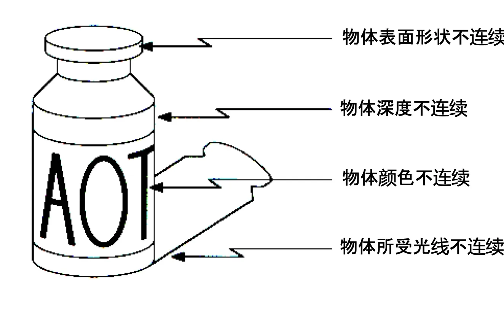
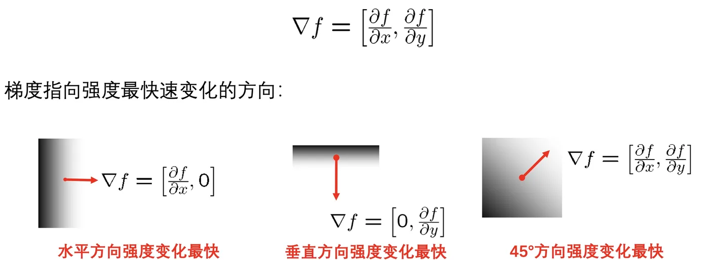

计算机视觉 · 第 3 章 边缘检测与线检测
3.1 图像边缘与梯度
这一节把「找边缘」这件事拆成三步：先回答边缘是什么、由什么引起；再引入刻画边缘的量——梯度；最后落到数字图像上，用有限差分把梯度算出来，得到最朴素的一类边缘算子。它接着第 2 章 2.7 节「图像梯度与边缘检测」往下讲，也是下一节 Canny 检测器的起点。
1. 边缘：像素值发生突变的地方
边缘是像素值发生突变的地方，也是图像中信息最集中的地方。一张自然图像里，绝大多数相邻像素的取值是接近的——墙面、天空、桌面这些区域内部几乎「没有内容」；真正携带信息的，是那些取值突然改变的位置。把边缘找出来，等于把图像从几百万个数字压缩成轮廓与边界，后面的分割、配准、识别才有可操作的起点。
图像边缘通常由多种因素引起，课件把它们归成四类：
- 物体深度不连续：前后物体交叠处产生的遮挡边界；
- 物体颜色不连续：不同材料、不同物体的交界；
- 物体所受光线不连续：阴影边界、光照突变；
- 物体表面形状不连续：同一个物体上的朝向突变，比如棱边、折角。
这四类有一个共同点：它们都是物理世界里的某种不连续投射到成像结果上的表现。反过来看，图像里出现的突变，几乎总能追溯到场景中的某种真实结构——这正是边缘能被用来做分割、配准和识别的根本原因。

2. 图像梯度：指向强度变化最快的方向
既然边缘对应「突变」，就需要一个量来衡量「变化的快慢与方向」。这个量就是梯度。梯度是一个向量：方向指向强度最快速变化的方向，长度表示变化有多剧烈。
课件用一个方格里画的灰度渐变来说明这件事：
- 方格里水平方向强度变化最快时，梯度是水平的；
- 垂直方向强度变化最快时，梯度是垂直的；
- 45° 方向强度变化最快时，梯度就指向 45°。
顺着这个定义可以推出一句话：沿着边缘走，像素值几乎不变；跨过边缘，像素值变化最快。所以梯度的方向与边缘的走向垂直——这一点在后面判断边缘朝向时反复用到。

于是「检测边缘」就变成了一个具体的计算任务：逐点求图像的梯度，梯度大的地方就是边缘。剩下的问题是：图像是离散的，怎么求梯度？
3. 离散梯度：用有限差分代替导数
数字图像不是一个连续函数，而是一张离散的取值表 F[x, y]，x、y 是整数下标，所以严格意义上的导数并不存在，只能用有限差分去近似它。最常用的写法是中心差分：
- ∂f/∂x (x, y) ≈ F(x+1, y) − F(x−1, y)；
- ∂f/∂y (x, y) ≈ F(x, y+1) − F(x, y−1)。
两个式子都只用到目标像素左右（或上下）的两个邻居：用右边减左边得到水平方向的变化率，用下边减上边得到垂直方向的变化率。
把这两个式子写开，就是两个 3×3 的模板，也就是滤波器——这正是课件所说的 Prewitt 算子：
| ∂f/∂x 的差分核 | ∂f/∂y 的差分核 | ||||
|---|---|---|---|---|---|
| −1 | 0 | 1 | 1 | 1 | 1 |
| −1 | 0 | 1 | 0 | 0 | 0 |
| −1 | 0 | 1 | −1 | −1 | −1 |
左边的核每一行都是「−1 0 1」，横着做一次差分，算出的就是 ∂f/∂x；右边的核每一列都是「1 0 −1」，竖着做一次差分，算出的就是 ∂f/∂y。两个核的每一行（每一列）系数相同，相当于在求差分之前先沿另一个方向做了一次平均——这是它比单行差分更抗噪的原因。
由此得到这一节最重要的结论：边缘检测本质上就是一种滤波，区别在于滤波器的选择，滤波的规则是完全一样的。所谓「换一种边缘检测算法」，换的其实是那个 3×3 的核。
本节小结
- 边缘是像素值发生突变的地方，也是图像中信息最集中的地方；成因可以归为深度、颜色、所受光线、表面形状四类不连续。
- 梯度是刻画突变的量：方向指向强度最快速变化的方向，长度表示变化的剧烈程度；梯度方向与边缘走向垂直。
- 数字图像上求梯度用有限差分：∂f/∂x ≈ F(x+1, y) − F(x−1, y)，∂f/∂y ≈ F(x, y+1) − F(x, y−1)。
- 把差分写成 3×3 模板就得到 Prewitt 算子；边缘检测本质上是滤波，换算法就是换滤波器。
- Prewitt 直接对原图差分，噪声会被一并放大——这正是下一节 Canny 检测器要先用高斯平滑的原因。